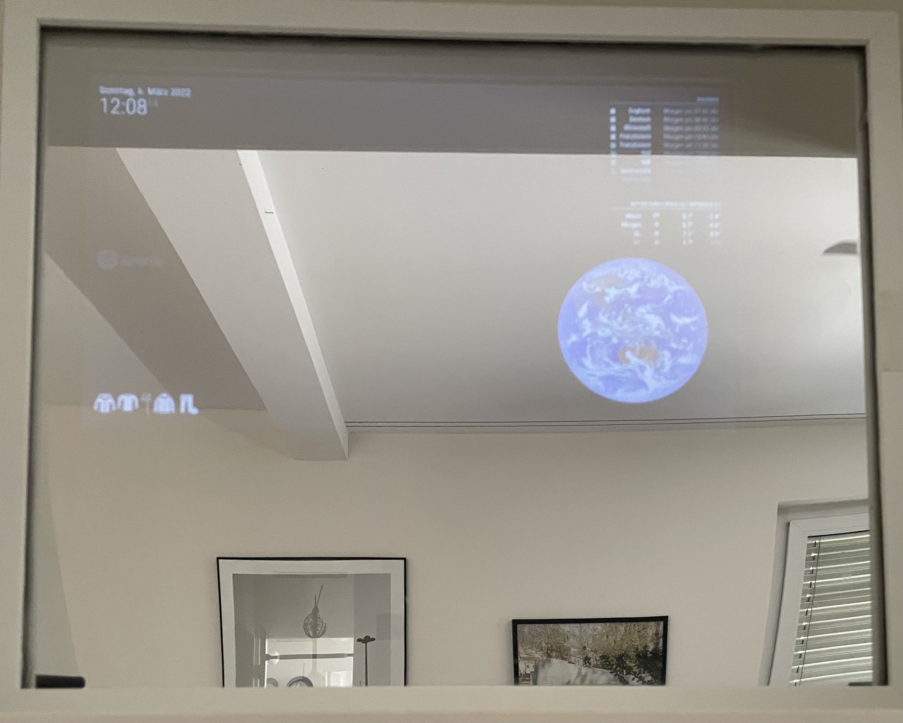

Smart mirror
I wanted to build a smart mirror because i needed a mirror in my room and wanted to make it special. My goal was that the mirror would make my everyday life easier. The mirror should display things like my calendar, my tasks and what the weather looks like. Due some troubles, my mirror cannot yet be used as I would like to use it.
First i tried to write down all the things i need for the smart mirror and what they cost. I was also looking for tutorials on how to build a smart mirror. I decided to work with the tutorial from glancr.de.
Next steps:
The next steps I want to do is to let the mirror boot up in the morning and shut down in the evening automatically.
Because the mirror sometimes switches itself off and on again automatically, I still have to deal with why it does this.
I also want to clean the edges and straighten the glass.
Hardware:
- Raspberry Pi 3 Model B
- LCD-Controller
- Display
- microSDHC memory card
- Frame
- Police mirror
-
Power adapter
- HDMI and USB cable
- Silicone glue from the hardware store
- Tape
- Chipboard